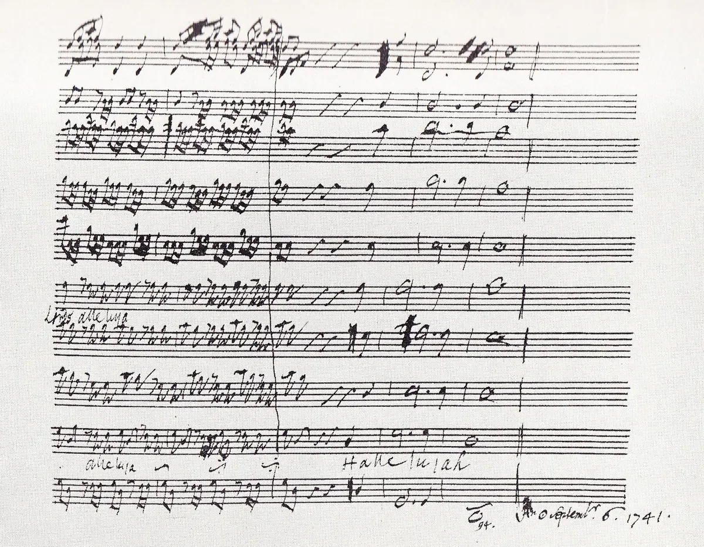
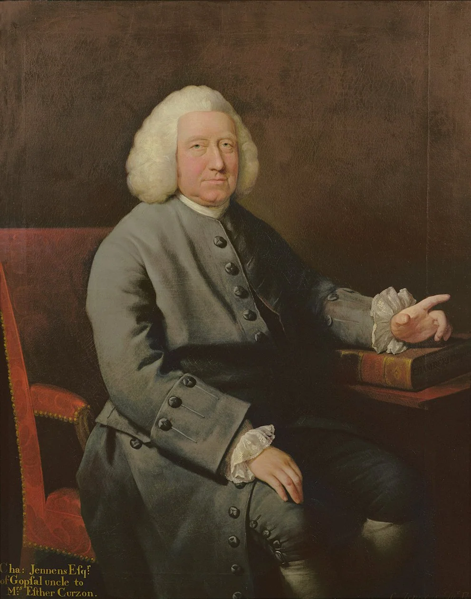
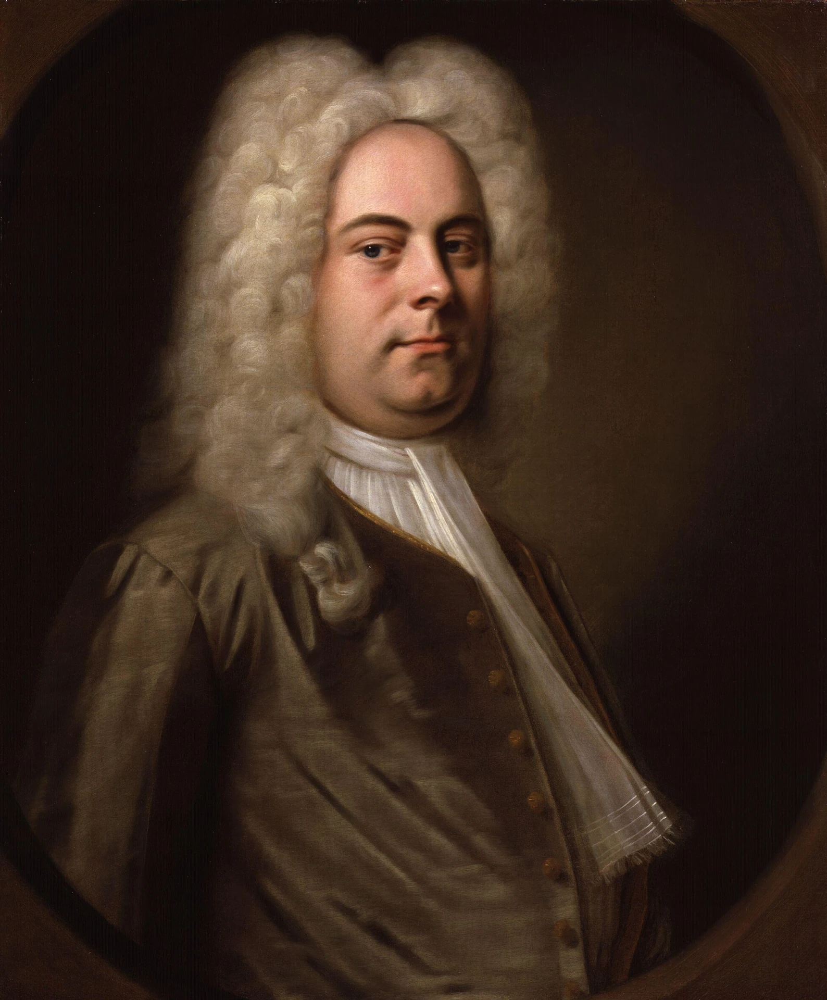
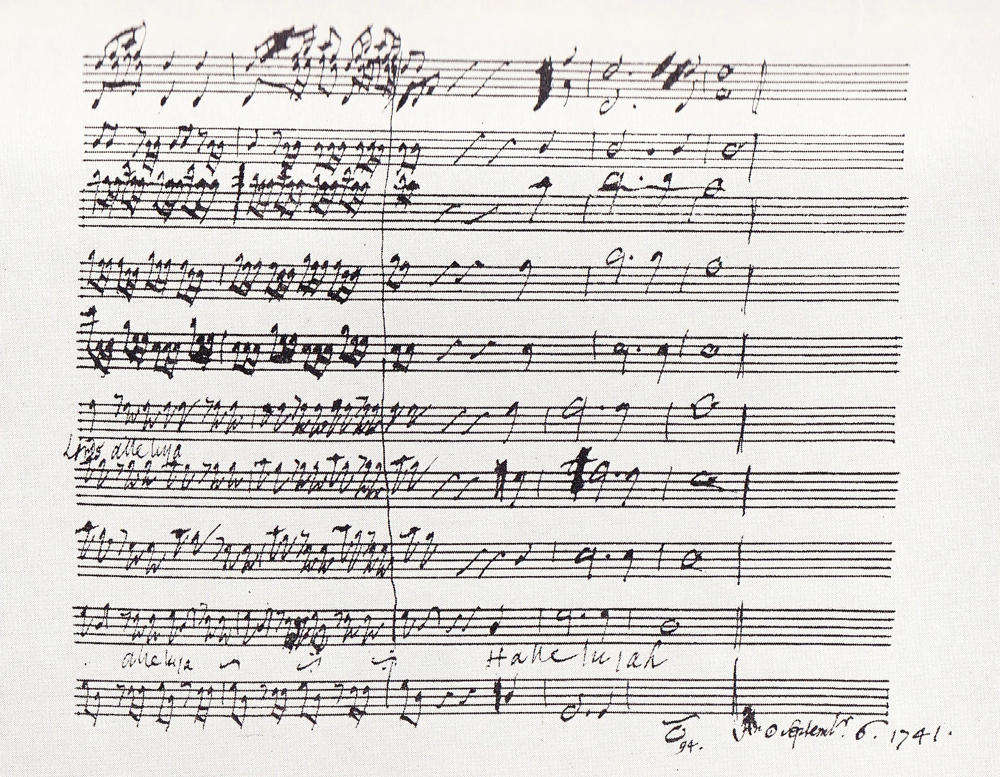
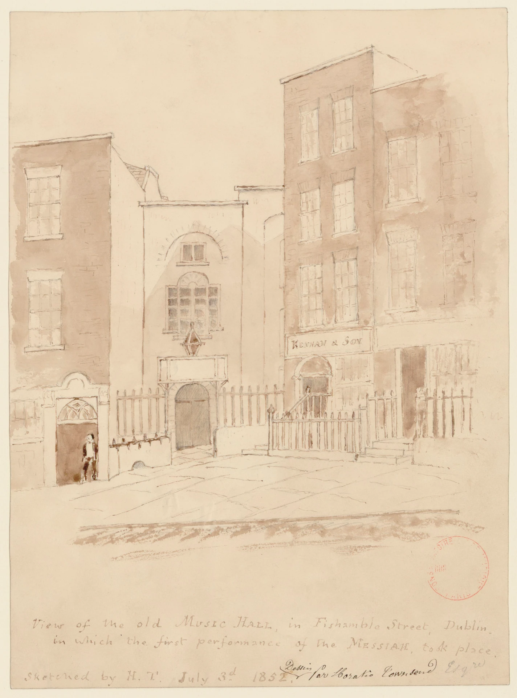
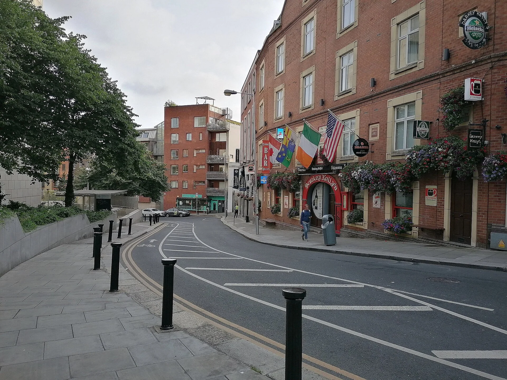

아직 펼치지 않은 카드성탄을 노래하다 · 4「메시아」 할렐루야 자필 악보펜이 달려간 자국이 보이는 악보예요. 어떤 노래의 마지막 장일까요?엄청 빨리 쓴 글씨 같아. 무슨 노래일까?
1741년 9월 6일영국 런던 · 브룩 거리 25번지 헨델의 집
「메시아」 할렐루야 자필 악보
1741년 늦여름, 헨델은 24일 만에 「메시아」를 썼어요. 9월 6일에는 2부의 마지막 곡 「할렐루야」를 끝내고 쪽 구석에 날짜를 적었어요. 그 한 쪽에 남은 펜 자국을 하나씩 찾아보세요.
헨델이라는 작곡가가 긴 노래를 24일 만에 다 썼대. 그중 ‘할렐루야’를 다 쓴 날, 악보에 날짜를 적었어. 그 악보를 같이 들여다볼까?
검수 전 시안이에요(기준서 1판). 악보의 날짜와 고친 자국은 영국도서관 목록과 연구자들의 정리를 따랐고, “온 하늘을 보았다”는 이야기는 확인되지 않은 전해지는 이야기라고 밝혔어요. 상상은 ‘눈 감고 상상해 보기’에서만 해요.
시안 확인용카드 단계 미리 보기
1
1741년 여름, 성경 구절 모음
「메시아」의 노랫말은 헨델의 친구 찰스 제넨스(Charles Jennens)가 엮었어요. 그는 영어 성경의 여러 책(성경은 여러 권의 책을 묶은 책이에요)에서 구절을 골라 세 부분으로 이었어요. 1부는 메시아를 알리는 예언과 탄생 이야기로 시작하고, 2부는 메시아의 고난과 희생, 3부는 부활과 구원을 노래해요.
1741년 7월 10일, 제넨스는 친구 에드워드 홀즈워스에게 편지를 썼어요. 「사울」에 이어 자기가 엮은 또 하나의 ‘성경 구절 모음’에 헨델이 곡을 붙이도록 설득해 보겠다며, 이렇게 덧붙였어요.

“그가 온 재주와 솜씨를 다 쏟아, 이 곡이 그의 이전 모든 곡보다 뛰어나기를 바라요. 이 주제가 다른 모든 주제보다 뛰어나듯이요. 주제는 메시아예요.”
제넨스가 에드워드 홀즈워스에게 보낸 편지(1741년 7월 10일) · 영어를 이 안내서가 옮김
메시아는 히브리말로 ‘기름 부음을 받은 이’라는 뜻이에요. 옛 이스라엘에서는 왕을 세울 때 머리에 기름을 부었어요(사무엘상 16장 13절). 이 말을 그리스어로 옮긴 ‘크리스토스’가 우리말 ‘그리스도’예요(나라 이름 그리스와는 다른 말이에요). 그리스도인들은 예수를 바로 그 메시아로 믿어요.
헨델의 친구가 성경에서 좋은 구절을 골라 노랫말을 만들었대. 그리고 “최고의 곡이 되면 좋겠다”고 편지에 썼어.
물어보기성경에서 노래로 만들고 싶은 구절이 있다면 뭐야?
2
24일
독일 할레에서 태어나 1727년 영국 사람이 된 헨델(Georg Friedrich Händel)은, 쉰여섯 살이던 1741년 8월 22일 런던 브룩 거리 25번지 집에서 곡을 쓰기 시작했어요. 1723년부터 세상을 떠날 때까지 서른여섯 해를 산 집이에요.
악보에 헨델이 직접 적은 날짜를 보면, 8월 28일에 1부, 9월 6일에 2부, 9월 12일에 3부의 뼈대를 마쳤어요. 그리고 이틀 동안 남은 부분을 채워 9월 14일에 작품 전체를 끝냈어요. 24일 만이었어요.

「메시아」는 오라토리오예요. 오라토리오는 성경 같은 거룩한 이야기를 독창과 합창, 관현악으로 들려주는 큰 노래예요.
헨델에게 이렇게 빨리 쓰는 일이 드문 일은 아니었어요. 그의 오페라도 여럿이 비슷한 빠르기로 쓰였고, 「메시아」를 마친 지 한 주도 안 되어 다음 오라토리오 「삼손」을 쓰기 시작했어요.
헨델은 이 긴 노래를 24일 만에 다 썼어. 그리고 일주일도 안 돼서 또 다른 곡을 쓰기 시작했대!
물어보기24일 동안 날마다 무언가를 한다면, 너는 무엇을 해 보고 싶어?
3
할렐루야의 마지막 쪽
1741년 9월 6일, 헨델은 2부의 마지막 곡 「할렐루야」를 끝내고 쪽 구석에 날짜를 적었어요. 펜이 지나간 자국이 그대로 남은 그 쪽이에요.
이 악보는 헨델이 곡을 지으며 쓴 원본이에요. 쓰는 동안, 그리고 첫 공연을 앞두고 고친 자국이 많아요. 악보 속 작은 것들을 하나씩 눌러 보세요.
헨델의 펜 자국 속 작은 것들을 하나씩 눌러 보세요. ‘가까이 보기’로 크게 볼 수 있어요.

「할렐루야」의 마지막 쪽, 헨델의 자필 악보(1741년 9월 6일). 원본은 영국도서관에 있어요 · 조지 프리드릭 헨델 · 퍼블릭 도메인 · 위키미디어 공용(옛 영인본을 찍은 사진)
그림 위의 숫자나 아래 번호를 눌러 보세요.
이 한 쪽에, 「할렐루야」를 끝낸 날 헨델의 펜이 지나간 자리가 고스란히 남아 있어요.
헨델이 「할렐루야」를 쓰며 “온 하늘을 보았다”고 했다는 이야기가 널리 퍼져 있어요. 하지만 연구자들은 확인되지 않은 전해지는 이야기로 봐요. 헨델은 「메시아」 악보의 맨 마지막 쪽(이 쪽이 아니에요)에 ‘SDG’라고 적었어요. ‘오직 하나님께 영광(Soli Deo Gloria)’이라는 뜻의 라틴말 머리글자예요.
이게 헨델이 직접 쓴 할렐루야 악보야. 맨 아래 구석에 날짜도 있어!
물어보기‘Hallelujah’라는 글자를 찾아볼까? 어디 있을까?
4
1742년 4월 13일, 더블린
그해 11월 헨델은 아일랜드 더블린으로 건너가 연주회를 열었어요. 「메시아」는 런던이 아니라 더블린에서 처음 울렸어요.
1742년 4월 13일 정오, 피셤블 거리(Fishamble Street)의 음악당. 600명쯤 들어가는 곳에 700명쯤이 모였어요. 자리를 넓히려고, 여자들은 치마를 부풀리는 테를 두고, 남자들은 칼을 두고 와 달라는 부탁이 신문에 실렸어요.
이 공연은 여러 감옥에 갇힌 사람들을 돕는 모임과 더블린의 두 병원, 이렇게 세 곳을 돕는 자선 공연이었어요. 400파운드쯤이 모여 세 곳에 나뉘었어요.


“감탄하며 가득 들어찬 청중에게 이 곡이 준 더없는 기쁨은, 말로 다 나타낼 수 없어요.”
「더블린 저널」의 첫 공연 기사(1742년 4월) · 영어를 이 안내서가 옮김
처음 공연할 때 사람이 너무 많아서, 칼이랑 큰 치마는 집에 두고 오라고 했대!
물어보기자리가 모자라면, 너는 무엇을 두고 올 수 있어?
눈 감고 상상해 보기
늦여름 런던, 브룩 거리 집의 조용한 방. 깃펜이 종이를 긁는 소리만 들려요. 마지막 마디에 겹줄을 긋고, 펜 끝을 잉크에 한 번 더 적셔 쪽 구석에 날짜를 적어요. 마르지 않은 잉크가 창빛에 반짝여요.
눈을 감아 봐. 조용한 방에서 깃펜이 사각사각 소리를 내. 마지막 줄을 긋고, 날짜를 적어. 할렐루야!
나의 자리
일곱 달 뒤 더블린의 첫 공연에서, 700명쯤이 이 한 쪽을 소리로 들었어요.
헨델은 「할렐루야」를 끝낸 날, 쪽 구석에 날짜를 적었어요. 내 마음에 ‘할렐루야’가 터져 나온 날이 있다면, 그날은 언제였나요?
너무 기뻐서 ‘할렐루야!’ 하고 노래하고 싶었던 날은 언제야?
마음에 닿는 한 줄을 고르거나 직접 써 보세요. 한 줄을 남기면 이 자리의 도장이 찍혀요. 이 기기에만 저장돼요.
더 깊이
이야기를 보다 궁금해질 만한 것들이에요. 답을 읽거나 짧은 영화로 보세요.
날짜 앞의 작은 동그라미는 뭐예요? 그날은 왜 ‘옛 달력으로’ 일요일이에요?
헨델은 왜 런던이 아니라 더블린에서 처음 공연했을까요?
뒷이야기
아직 펼치지 않은 이야기예요. 누르면 이야기가 펼쳐지고 색이 돌아와요. 더 알고 싶으면 근거를 따라가 보세요.
다 펼치면, 다음에 오실 때 새 이야기가 찾아와요.
오늘의 뒷이야기는 여기까지예요. 다음에 오시면 새 이야기가 기다리고 있어요.
펼친 뒷이야기 · 누르면 다시 볼 수 있어요
더 찾아보기
기록마다 다른 점
며칠 만에? 8월 22일부터 9월 14일까지 세면 24일이에요. 3부의 뼈대를 마친 9월 12일까지만 세어 21일이라고 적은 안내도 있어요.
첫 공연 날 처음에는 4월 12일로 알렸다가, “이름 있는 분들의 바람으로” 하루 미뤄 13일에 열었어요.
“온 하늘을 보았다” 이 말은 헨델이 직접 남긴 글에서는 찾을 수 없어, 전해지는 이야기로 봐요. 연구자 도널드 버로스는 헨델의 오페라도 여럿이 비슷한 빠르기로 쓰였다고 짚어요.
직접 가 보기
확인한 날 · 2026년 11월 18일 · 바뀌기 쉬운 정보라 정기적으로 다시 확인해요
런던 브룩 거리 25번지, 헨델이 서른여섯 해를 살며 「메시아」를 쓴 집은 지금 ‘헨델 헨드릭스 하우스’ 박물관이에요.
첫 공연을 연 피셤블 거리의 음악당은 지금 남아 있지 않고, 들어가던 문의 돌 아치만 남았어요. 이 거리에서는 해마다 4월, 첫 공연을 기억하며 「메시아」를 불러요. 자필 악보 원본은 영국도서관에 있어요.
여는 때와 값, 공연 날짜는 다녀가기 전에 누리집에서 확인해 주세요.
펜 자국 다섯 곳 금박
‘할렐루야의 마지막 쪽’에서 다섯 곳을 모두 찾아 읽으면 카드에 금박이 입혀져요.
자필 악보 속 다섯 곳을 모두 찾아 읽기
마지막 마디 채색
찾아본 그 쪽이 소리로는 어떻게 들리는지 들어 보세요. 둘 가운데 하나만 해도 카드가 채색돼요.
‘할렐루야의 마지막 쪽’에서 「할렐루야」 끝부분 듣기
아이와 함께 ‘영화처럼 보기’를 끝까지 보기
근거 보기 (20)
- 영국도서관 목록 R.M.20.f.2: 헨델이 적은 날짜로 1741년 8월 22일~9월 14일, 고친 자국이 많음, 「할렐루야」는 100~106장
- 헨델 헨드릭스 하우스: 1723년부터 브룩 거리에서 서른여섯 해, 1741년 8월 22일~9월 14일 「메시아」
- 서스캐처원 새스커툰 교향악단: 부마다 마친 날짜, 24일, 한 주 안에 「삼손」, 1741년 11월 18일 더블린, 하루 미룬 첫 공연, 700명, “온 하늘” 이야기와 SDG, 첫 공연 앞 고친 자국
- 워너 클래식스 「메시아」(존 넬슨) 해설지: 1741년 7월 10일 제넨스의 편지, 세 부분의 내용
- BBC 뮤직 매거진(classical-music.com): 더블린 첫 공연 — 정오, 600명쯤 드는 곳, 테와 칼, 세 자선처, 400파운드, 「더블린 저널」 기사
- History Ireland: 600석에 700명쯤, 테와 칼, 빚진 이들을 돕는 자선, 피셤블 거리의 해마다 공연
- 셰필드 바흐 합창단: 하루 미룬 첫 공연, 400파운드가 넘은 모금, 세 자선처
- 케임브리지 대학 출판부 『헨델 문서집』 3권 앞부분: 1739년 9월부터 요일 기호, 「성 체칠리아 축일 송가」 1739년 9월 24일(월요일 기호)
- 괴테 인스티튜트 아일랜드: 피셤블 거리 새 음악당에서 1742년 4월 13일 정오 첫 공연, 음악당은 없고 입구의 돌 아치만 남음
- 아일랜드 국가 건축 유산 목록(NIAH) 50020501: 옛 피셤블 거리 음악당을 기억하게 하는 아치
- Continuo Connect: 1750년부터 해마다 파운들링 병원 공연
- 런던 박물관 안내(museumslondon): 21일이라고 적은 안내
- 브리태니커: messiah — 히브리말 ‘기름 부음을 받은 이’, 그리스어 ‘그리스도’
- 브리태니커: oratorio — 거룩한 이야기를 독창·합창·관현악으로
- 메리엄-웹스터 사전: hallelujah — 히브리말 ‘주님을 찬양하라’
- 위키백과(길잡이): Messiah (Handel) — 잉크 얼룩·긁어 지운 자국, 러켓의 평가
- 위키백과(길잡이): Messiah Part II — 「할렐루야」의 요한계시록 구절
- 헨델 헨드릭스 하우스: 1685년 할레에서 태어남, 1727년 영국 시민이 됨(둘째 장면의 헨델 소개)
- 워너 클래식스 해설지: 제넨스는 「사울」의 노랫말을 쓴 사람, 1부에 예언과 동정녀 탄생·목자들(첫째 장면 길잡이)
- 브리태니커: messiah — 그리스어 christos(첫째 장면 ‘크리스토스’)
그림·사진·소리 출처
- 조지 프리드릭 헨델 · 퍼블릭 도메인 · 위키미디어 공용(옛 영인본을 찍은 사진)
- 메이슨 체임벌린 그림 · 퍼블릭 도메인 · 위키미디어 공용
- 발타자르 데너 그림(으로 봄) · 퍼블릭 도메인 · 위키미디어 공용
- 호레이쇼 타운센드 그림(1852) · 퍼블릭 도메인 · 프랑스 국립도서관 · 위키미디어 공용
- 사진: Karlunun · 퍼블릭 도메인 · 위키미디어 공용
- 헨델, 「메시아」 자필 악보 · 퍼블릭 도메인 · 위키미디어 공용
- 「할렐루야」 끝부분: 국립합창단(The National Chorus of Korea) 녹음, 서울 예술의전당 콘서트홀 · CC BY 3.0 · 위키미디어 공용(끝 1분쯤을 잘라 씀)
‘처음 만나는 기독교 문화’의 깊은 카드예요. 사람의 모습은 옛 초상화만 썼어요. 카드 단계와 남긴 글은 이 기기에만 저장돼요.